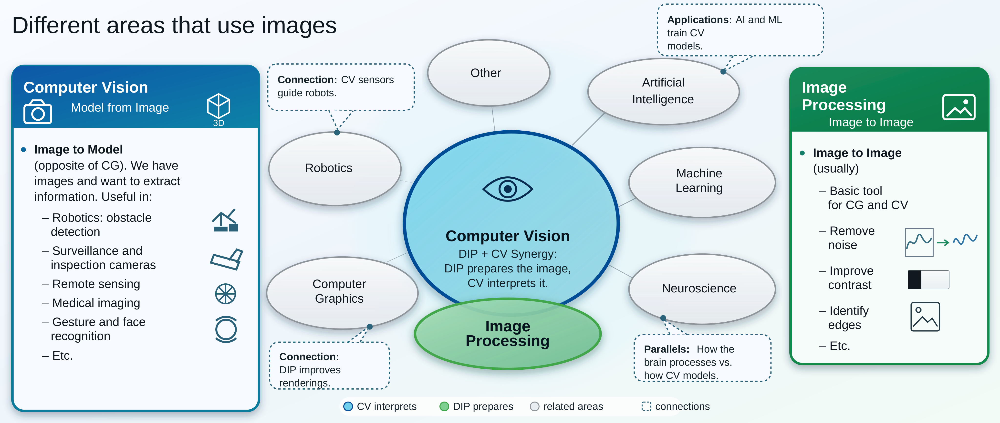
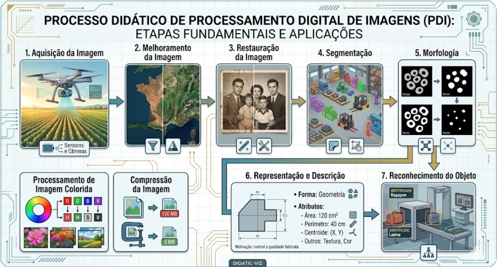
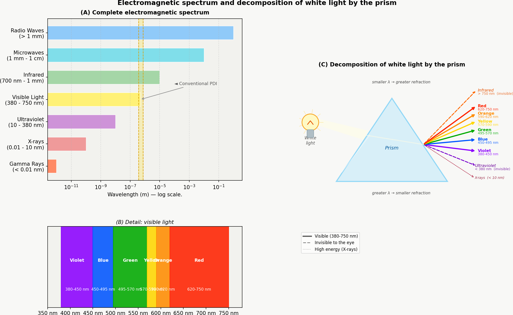
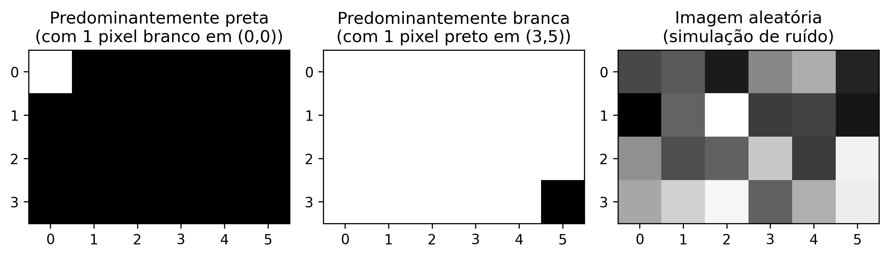
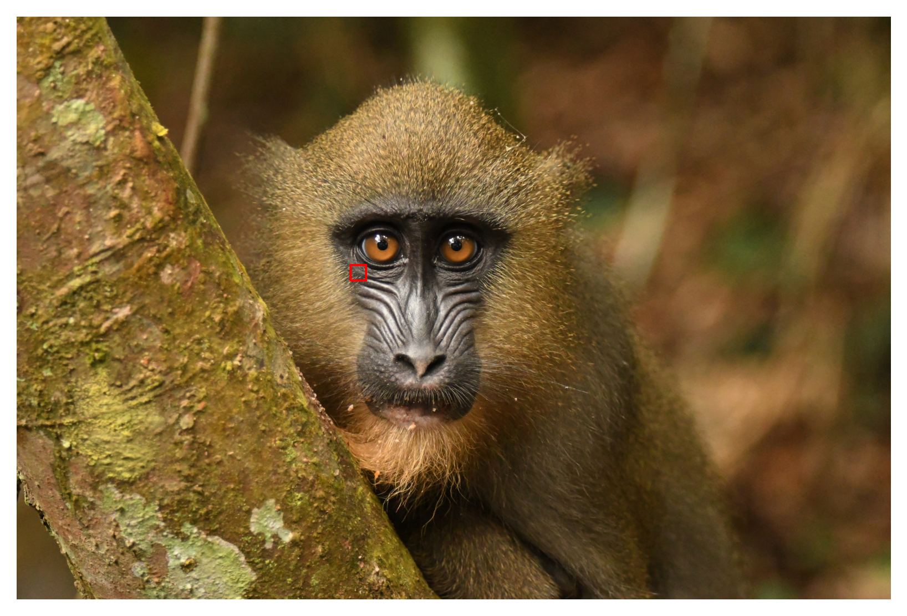

This chapter inaugurates Part 1 of the book, dedicated to the fundamentals of Digital Image Processing (DIP). The mathematical representation of digital images and the main methods for their manipulation are presented.
Use the C++ language and the morph.hpp library, a didactic port of morph.py (ZAMPIROLLI, 2025).
1.1 Objectives
At the end of this chapter, you will be able to:
Understand the physical and mathematical nature of the digital image \(f(x,y)\).
Identify the bands of the electromagnetic spectrum relevant to DIP.
Perform basic operations: reading, displaying, and saving images.
Access and modify pixel intensities individually.
Apply manual thresholding.
Set up the C++ development environment.
Manipulate matrix structures (std::vector) without falling into copy/reference pitfalls.
1.2 Before you begin: Interactive Notebooks
This material was built under the concept of Literate Programming, conceived by Donald Knuth in the 1980s (KNUTH, 1984). Knuth — also the creator of the TeX system for digital typesetting — proposed that programs be written as a logical narrative for human beings, interleaving code and documentation.
To run a cell, press Shift + Enter or click the ▶️ button.
NoteNote on the format
In rendered versions (PDF or HTML), the code is presented in static blocks for reading and reference purposes. Interactive execution requires access via Google Colab (available at the top of the page) or in a local environment via VSCode or Jupyter Notebook.
1.3 Fundamentals
The study of image-based systems encompasses an ecosystem of integrated disciplines that transform raw visual data into structured knowledge. While some areas focus on generating representations, others are dedicated to processing and analyzing this data to support complex technological applications.
The diagram presented in Figure 1.1 establishes the distinction and complementarity between Digital Image Processing (DIP) and Computer Vision (CV). DIP, highlighted in green, focuses on image-to-image transformation, aiming at quality improvement or preprocessing, such as noise removal and contrast enhancement.
In contrast, CV, marked in blue, focuses on interpreting visual content to extract models or information, such as object and gesture recognition. The intersection region illustrates the synergy between the areas, where DIP prepares the visual data for interpretation by CV. The map also demonstrates the interconnections of both disciplines with areas such as Robotics, Computer Graphics, Artificial Intelligence (AI), and Neuroscience.

Figure 1.1: Relational diagram detailing the fundamental distinctions, synergies, and interconnections between DIP and CV in the context of image-based systems.
1.3.1 👁️ Computer Vision
Focus:Image → Model (inverse path of Computer Graphics).
Goal: Extract high-level information from images or videos.
Typical applications:
Robotics – obstacle detection, localization, and autonomous navigation.
It is the foundation for most CV systems (preprocessing).
Computer Graphics often applies DIP for postprocessing (e.g., smoothing, enhancement).
AI techniques can optimize processing parameters (e.g., filter learning).
Table 1.1: Connection among IP, CV, and other scientific areas.
Area
Relation with IP and CV
Artificial Intelligence
Provides models (neural networks, SVM) that interpret CV outputs.
Robotics
Consumes CV data for decision-making (navigation, manipulation).
Machine Learning
Uses descriptors extracted by IP/CV to train classifiers.
Computer Graphics
Inverse path: model → image; often applies IP for realistic rendering.
Neuroscience
Inspires IP models (e.g., filters similar to retinal ganglion cells).
1.4 PDI Stages
The PDI stages are presented in Figure 1.2, which can be understood as a chain of transformations that reduces data redundancy in search of meaning:
Low Level: Acts directly on the pixels of the noisy image to perform enhancements and filtering, producing as output a clean or enhanced image.
Medium Level: Receives the processed image and performs segmentation and description, transforming the pixel matrix into structured attributes (shape, size, and texture).
High Level: Uses the attribute table to feed logic and artificial intelligence processes, resulting in the final decision or recognition (such as medical diagnosis).
Figure 1.2: Representation of the sequential processing flow: the output of each level becomes the input of the subsequent level.
Figure 1.3 details the complete sequence of digital image processing (DIP), from acquisition to interpretation. The flow begins with Image Acquisition (1) and proceeds through Enhancement (2) and Restoration (3). Next, the content is isolated by Segmentation (4) and refined by Morphology (5). The crucial transition occurs in Representation and Description (6), where visual objects are converted into mathematical data (area, perimeter, etc.), enabling Recognition (7). Auxiliary processes include Color Image Processing and Compression, which contribute to the efficiency of storage and analysis.

Figure 1.3: Detailed DIP flow: from sensory acquisition to attribute extraction and automated recognition, including color processing and compression.
1.5 Image Formation and the Spectrum
The image formation process is grounded in the interaction between matter and radiant energy. Essentially, an image is conceived when a sensor records the radiation resulting from the interaction with a physical object. In the context of human vision and conventional photography, this phenomenon depends on a light source that illuminates the scene; the characteristics of the objects are then encoded through variations in intensity and color of the light reaching the sensor, as illustrated in Figure 1.4.
Figure 1.4: Representation of the visible spectrum and its position relative to other electromagnetic radiations, highlighting the variation in wavelengths from 380 nm to 750 nm.
Visible light occupies only a small band of the electromagnetic spectrum — between 380 nm (violet) and 750 nm (red) — as illustrated in Figure 1.5. Conventional digital sensors operate within this same window, but specialized equipment can capture radiation invisible to the human eye, such as infrared and X-rays. In digital image processing (DIP), the image formed depends directly on the spectral sensitivity of the sensor used.

Figure 1.5: (A) Complete electromagnetic spectrum on a logarithmic scale, highlighting the visible range. (B) Detail of visible light (380–750 nm) and its colors. (C) Decomposition of white light by the prism: shorter wavelengths undergo greater refraction, separating UV, visible, and infrared light.
From this physical acquisition process, it becomes possible to mathematically model the digital image as a discrete two-dimensional function, in which each point of the scene is represented by numerical samples of light intensity, thus formalizing the concepts of pixel and digital image presented in the next section.
1.6 What is a Digital Image?
A digital image is formed by a grid of pixels (Picture Elements), where each pixel is the smallest elementary unit of the image.
TipWhat is a Pixel?
A pixel is the smallest addressable unit that makes up a digital image. Each pixel occupies a unique position in the grid and stores one or more numerical values that represent its intensity or color.
Mathematical Representation
Unlike a continuous function, the domain of a digital image is a finite rectangular plane \(\mathbb{E} \subset \mathbb{Z}^2\), which represents the sampling grid. This domain is indexed by integer coordinates:
\[
\mathbb{E} = \{ (x, y) \in \mathbb{Z}^2 \mid 0 \le x < L,\; 0 \le y < H \}
\tag{1.1}\]
Where:
\(L\): represents the width of the image (number of columns).
\(H\): represents the height of the image (number of rows).
The digital image is a function that associates each pair of coordinates \((x,y)\) with one or more values that describe the pixel’s appearance.
\[
f: \mathbb{E} \to \mathcal{V}
\tag{1.2}\]
The set \(\mathcal{V}\) defines the possible values for the pixel (codomain), varying according to the image type, as demonstrated in Table 1.2.
Table 1.2: Main types of digital images and their respective sets of possible values for each pixel.
Image type
\(\mathcal{V}\) (pixel values)
Representation
Binary
\(\{0, 1\}\) or \(\{0, 255\}\)
⬛◻️
Grayscale
\(\{0, 1, \dots, 255\}\)
░▒▓█
Color (RGB)
\(\{0, \dots, 255\}^3\) (ordered triples of values)
🟥🟩🟦
Practical example: A color image in the RGB model can be mathematically represented by a function that associates three intensity values with each pixel. Computationally, this representation corresponds to three overlapping matrices — the red (Red), green (Green), and blue (Blue) channels — in which each element stores the luminous intensity of the respective channel at a given position in the image.
To enable practical PDI and VC experiments, this book uses C++17 and a minimal set of libraries focused on matrix manipulation, image processing, and result visualization, presented below.
1.7 Environment Setup
This material uses C++17 and the single-header library morph.hpp, originally proposed for Python in Zampirolli (2025). Here, a minimal and didactic version of morph.py is used, adapted for straightforward compilation with g++, as presented in Table 1.3.
Each code cell is compiled and run as an isolated process (%%writefile file.cpp followed by g++). Unlike the Python kernel, there is no persistent state between cells: the images produced by a cell are saved to files to be read by the next one.
The Programming Exercises (PEs) presented at the end of the chapters can be validated by the same testsuite.py module used in the Python track, which compiles the solution with g++ and compares its output with the test cases. Thus, the same test cases (.cases) can validate solutions in C++, Python, and other languages, both in the notebooks and in Moodle/VPL.
Table 1.3: Main libraries and tools used in the C++ track of this book.
Library / Tool
Main function
g++ (C++17)
Compilation of each code cell
morph.hpp
Didactic abstraction of DIP operations
stb_image.h / stb_image_write.h
Reading/writing PNG/JPEG (without OpenCV)
testsuite.py
Execution and automatic validation of PEs
1.8 About morph.hpp
morph.hpp is a minimal, didactic C++ version of morph.py: it implements the functions used in this chapter (read, gray, randomImage, show, write, threshold, drawImg), in addition to morphology operations (dil/ero and variants dil0/ero0/dil1/ero1) prepared for the following chapters. There is no guaranteed numerical parity with the Python implementation—the criterion is “it compiles and produces a plausible image,” not “a bit-for-bit identical result to Python.”
The stb_image.h/stb_image_write.h libraries (public domain/MIT) are vendored alongside the repository—that is, their source code is already copied into the project itself, rather than installed separately via apt install—which avoids depending on system packages during compilation on Colab. The dil()/ero() operations use cv::dilate/cv::erode when compiled with -DMM_USE_OPENCV; without this flag (the default, including in Moodle/VPL), they fall back to the equivalent didactic version (dil1/ero1) without requiring OpenCV.
import os, urllib.requestos.makedirs("tmp/state", exist_ok=True) # C++ track build artifacts (.cpp, binary, PNGs)url ="https://raw.githubusercontent.com/fzampirolli/pdi-vc/master/morph/config.py"ifnot os.path.exists("config.py"): urllib.request.urlretrieve(url, "config.py")# The kernel is Python even in the C++ track: `mm` (morph.py) is used by the# simulators, by the display of the figures the C++ binary generates and by the# mm::Image state between cells. cpp=True also downloads the compiled track# (morph.hpp + stb_image*.h), used in the #include of the %%writefile *.cpp cells.import configconfig.setup(testsuite=True, cpp=True)from morph import mmfrom testsuite import TestSuite
1.9 Matrix Fundamentals — Beware of Copying References
Since a digital image can be represented by a matrix, it is important to understand how to correctly create and manipulate matrices. In C++, std::vector has value semantics: copying the vector copies its data. Therefore, std::vector<std::vector<int>> m(3, std::vector<int>(2, 0)) indeed creates three independent rows — the fill constructor copies the template row three times.
WarningBeware of Copying References
The pitfall appears when pointers or references are used instead of copies. In std::vector<int> linha(2, 0); std::vector<std::vector<int>*> m(3, &linha);, the three elements of m point to the same row, and changing (*m[0])[0] changes all of them. The same occurs with auto& linha = m[0]; (reference — modifies the matrix), in contrast to auto linha = m[0]; (copy — leaves the matrix intact).
To visualize this behavior, one can run the code in Python Tutor (which also executes C++ step by step) and compare the effect of copies and references.
In practice, for digital image processing (DIP), the mm::Image structure from morph.hpp is used, which also has value semantics: mm::Image b = a; copies the pixels, while mm::Image& b = a; creates only an alias for the same image. The following code presents different ways of creating synthetic images, whose results are displayed in Figure 1.6..
%%writefile tmp/fig_imagens_sinteticas.cpp#define MM_OUT "tmp/fig_imagens_sinteticas.png"#include "morph.hpp"#include <iostream>#include <string>#include <vector>#include <filesystem>int main() {// Criando uma imagem preta (zeros) de 4, 6 pixels mm::Image img_preta(4, 6); img_preta.at(0, 0) =255;// pixel branco no canto superior esquerdo// Criando uma imagem branca (255) de 4, 6 pixels mm::Image img_branca(4, 6); std::fill(img_branca.data.begin(), img_branca.data.end(), 255); img_branca.at(3, 5) =0;// pixel preto no canto inferior direito// Criando uma imagem aleatória para testes (ruído) mm::Image img_random = mm::randomImage(4, 6, 255); std::cout <<"Matriz aleatória gerada:"<< std::endl; std::cout << mm::drawImg(img_random); mm::show( {img_preta, img_branca, img_random}, MM_OUT, {"Predominantemente preta\n(com 1 pixel branco em (0,0))","Predominantemente branca\n(com 1 pixel preto em (3,5))","Imagem aleatória\n(simulação de ruído)" },3 );// [pdi:panel-io] auto-generated — do not edit by handstd::filesystem::create_directories("tmp");mm::write(img_preta, "tmp/fig_imagens_sinteticas_0.png");mm::write(img_branca, "tmp/fig_imagens_sinteticas_1.png");mm::write(img_random, "tmp/fig_imagens_sinteticas_2.png");// [pdi:panel-io:end]return0;}
Overwriting tmp/fig_imagens_sinteticas.cpp
!g++-I. -std=c++17 tmp/fig_imagens_sinteticas.cpp -o tmp/fig_imagens_sinteticas \&& ./tmp/fig_imagens_sinteticas \&& test -f "tmp/fig_imagens_sinteticas.png"\|| echo "⚠ mm::show não gravou tmp/fig_imagens_sinteticas.png"
mm.show( [ mm.read("tmp/fig_imagens_sinteticas_0.png"), mm.read("tmp/fig_imagens_sinteticas_1.png"), mm.read("tmp/fig_imagens_sinteticas_2.png"), ], titles=['Predominantemente preta\n(com 1 pixel branco em (0,0))','Predominantemente branca\n(com 1 pixel preto em (3,5))','Imagem aleatória\n(simulação de ruído)', ], cols=3, axis=True, figsize=(9, 3),)

Figure 1.6: Exemplos de imagens sintéticas representadas matricialmente.
1.10 Reading and Displaying Images
In libraries such as OpenCV (cv::Mat), digital images are computationally represented as multidimensional arrays. In morph.hpp, the mm::Image structure adopts a simpler approach: a linear buffer of bytes (std::vector<unsigned char>), with explicit height, width, and number of channels.
One of the fundamental operations in digital image processing (PDI) is image reading.
In morph.hpp, the mm::read() function allows loading images from both local files and URLs, as illustrated in Figure 2.7..
Figure 1.7: Mandrill (Mandrillus sphinx) em ambiente natural. Crédito: Julien Renoult (CC BY 4.0).
Alternative: Downloading the Image to Local Storage
In environments where direct reading from URLs is unavailable — due to network restrictions, firewall policies, or lack of connectivity — an alternative is to download the image beforehand to the local file system and then load it with mm::read(). In the C++ track, mm::read also accepts URLs directly (internal download via curl/wget); this alternative covers the case of downloading once and reusing the local file. In the following example, the file is saved as mandrill.png.
wget -O mandrill.png <URL> downloads the image and stores it locally under the specified name;
mm::read("mandrill.png") reads the file directly from the file system, without the need for additional HTTP requests;
this strategy reduces dependence on connectivity during the execution of experiments and avoids repeated downloads of the same image.
TipNote
The ! prefix is used in notebook-based environments, such as Jupyter Notebook, JupyterLab, and Google Colab, to run operating system commands directly within code cells. In conventional terminals, the command must be used without the ! prefix.
If the wget utility is not installed, one may alternatively use:
As we have seen, a color image in the RGB space is represented by the function:
\[
f: \mathbb{E} \to \{0,1,\dots,255\}^3
\]
That is, for each pixel \((x,y)\), we have three values \((R,G,B)\) that define its color.
Conversion to Grayscale
To convert an RGB image to grayscale, it is necessary to combine the three channels into a single intensity value \(g\), which represents the perceived brightness. Since the human eye is not equally sensitive to red, green, and blue, a weighted average is used. The ITU-R BT.601 standard ({ITU-R}, 2011) defines the following weights:
\[
g = 0.299\,R + 0.587\,G + 0.114\,B
\tag{1.3}\]
After the calculation, the value \(g\) is rounded to the nearest integer and adjusted to the interval \([0, 255]\). The result is a new image, now in grayscale, represented by:
From the grayscale image \(f_{\text{gray}}(x,y)\), a fundamental operation is thresholding, which produces a binary image (only black and white). To do this, a cutoff value \(T\) is chosen (usually in the interval \([0,255]\)) and defined as:
Example: With \(T = 128\), pixels with intensity above 128 become white (255); the remaining ones become black (0).
Thresholding is widely used to segment objects from the background, extract edges, or create binary masks for further processing.
Note: The value 255 represents maximum white in 8-bit images, while 0 represents absolute black.
Practical example of conversion and thresholding
Figure 1.8 illustrates the main steps to transform a color image into grayscale and then convert it into a binary image by thresholding. The following code implements these steps:
%%writefile tmp/fig_01_processamento_basico.cpp#define MM_OUT "tmp/fig_01_processamento_basico.png"#include "morph.hpp"#include <string>#include <vector>#include <filesystem>int main() {// [pdi:state-io] auto-generated — do not edit by handmm::Image img = mm::_read_state("tmp/state/img_34.png");// [pdi:state-io:end]//1. Convert to Grayscale mm::Image img_gray = mm::gray(img);//2. Apply threshold (Pixels >128 become 255, others 0)int limiar =128; mm::Image img_binaria = mm::threshold(img_gray, limiar);// Use of the new function mm::show( std::vector<mm::Image>{img, img_gray, img_binaria}, MM_OUT, std::vector<std::string>{"Original", "Grayscale", "Binary (T="+ std::to_string(limiar) +")"},3 );// [pdi:state-io] auto-generated — do not edit by handstd::filesystem::create_directories("tmp/state");mm::write(img_gray, "tmp/state/img_gray_38.png");// [pdi:state-io:end]// [pdi:panel-io] auto-generated — do not edit by handstd::filesystem::create_directories("tmp");mm::write(img, "tmp/fig_01_processamento_basico_0.png");mm::write(img_gray, "tmp/fig_01_processamento_basico_1.png");mm::write(img_binaria, "tmp/fig_01_processamento_basico_2.png");// [pdi:panel-io:end]return0;}
Overwriting tmp/fig_01_processamento_basico.cpp
!g++-I. -std=c++17 tmp/fig_01_processamento_basico.cpp -o tmp/fig_01_processamento_basico \&& ./tmp/fig_01_processamento_basico \&& test -f "tmp/fig_01_processamento_basico.png"\|| echo "⚠ mm::show não gravou tmp/fig_01_processamento_basico.png"
Figure 1.8: Processamento básico de imagens: (a) imagem original, (b) imagem em tons de cinza, (c) imagem binarizada por limiar (T=128).
1.12 Thresholding using the Otsu method
As presented in Equation 1.4, thresholding converts a grayscale image to a binary one using a cutoff value \(T\). So far, we have fixed \(T = 128\) manually.
However, the manual choice of \(T\) is not always trivial. The mm library offers an automatic alternative: when the threshold is not provided, the function mm::threshold(img_gray) computes the value of \(T\) using the Otsu method (OTSU, 1979). This method, which will be detailed in future chapters, maximizes the between-class variance of the histogram (frequency of each gray level), automatically separating object and background pixels.
The code below compares manual thresholding (\(T=128\)) with automatic thresholding (Otsu). Otsu binarization is performed with mm::threshold(img_gray); since the minimal API of morph.hpp does not return the computed \(T\), the value displayed in the figure label is retrieved with cv2.threshold at the display stage (same algorithm, same \(T\)).
%%writefile tmp/fig_01_otsu.cpp#define MM_OUT "tmp/fig_01_otsu.png"#include "morph.hpp"#include <iostream>#include <string>#include <vector>#include <filesystem>int main() {// [pdi:state-io] auto-generated — do not edit by handmm::Image img_gray = mm::_read_state("tmp/state/img_gray_38.png");// [pdi:state-io:end]// Limiarização com T fixo (manual)int T_fixo =128; mm::Image img_bin_fixo = mm::threshold(img_gray, T_fixo);// Limiarização pelo método de Otsu (T automático)// cv2.threshold(img_gray, 0, 255, THRESH_BINARY + THRESH_OTSU) // maps to: T_otsu = mm::otsu(img_gray); img_bin_otsu = mm::threshold(img_gray);int T_otsu = mm::otsu(img_gray); mm::Image img_bin_otsu = mm::threshold(img_gray); std::cout <<"Limiar calculado por Otsu: T = "<< T_otsu <<"\n";// ou simplesmente:// img_bin_otsu = mm::threshold(img_gray);// Exibição lado a lado mm::show( {img_gray, img_bin_fixo, img_bin_otsu}, MM_OUT, {"Tons de Cinza", "Binária (T="+ std::to_string(T_fixo) +")", "Binária (Otsu, T="+ std::to_string(T_otsu) +")"},3 );// [pdi:panel-io] auto-generated — do not edit by handstd::filesystem::create_directories("tmp");mm::write(img_gray, "tmp/fig_01_otsu_0.png");mm::write(img_bin_fixo, "tmp/fig_01_otsu_1.png");mm::write(img_bin_otsu, "tmp/fig_01_otsu_2.png");// [pdi:panel-io:end]return0;}
Overwriting tmp/fig_01_otsu.cpp
!g++-I. -std=c++17 tmp/fig_01_otsu.cpp -o tmp/fig_01_otsu \&& ./tmp/fig_01_otsu \&& test -f "tmp/fig_01_otsu.png"\|| echo "⚠ mm::show não gravou tmp/fig_01_otsu.png"
Limiar calculado por Otsu: T = 95
[1] Tons de Cinza
[2] Binária (T=128)
[3] Binária (Otsu, T=95)
Figure 1.9: Comparação entre limiarização manual (T=128) e automática (Otsu) sobre a imagem em tons de cinza.
The Figure 1.9 shows that the threshold obtained by Otsu automatically adapts to the image, resulting in more efficient binarization than a fixed value, especially when the object and background intensities are well separated in the histogram. This technique is widely used in CV systems for document binarization, object detection, and image preprocessing.
morph.hpp abstracts all this complexity: simply call mm::threshold(img_gray). The Otsu threshold is automatically computed and the binary image is returned directly. This approach allows one to focus on the concept rather than implementation details.
1.13 Pixel Access
In morph.hpp, the image is an mm::Image with a linear buffer data (row after row, interleaved channels) and the at(y, x, c) method for individual access, following the matrix convention of row (Y-axis) and column (X-axis): img.at(row, column) for grayscale and img.at(row, column, channel) for each channel of an RGB image.
The code in Figure 1.10 demonstrates how to extract these values in color (RGB) and grayscale images, as well as isolating the immediate neighborhood of the point of interest.
%%writefile tmp/fig_01_pixel_acesso.cpp#define MM_OUT "tmp/fig_01_pixel_acesso.png"#include "morph.hpp"#include <iostream>#include <string>int main() {// [pdi:state-io] auto-generated — do not edit by handmm::Image img = mm::_read_state("tmp/state/img_34.png");mm::Image img_gray = mm::_read_state("tmp/state/img_gray_38.png");// [pdi:state-io:end]//1. Coordinates of the target pixel (row, column)int r =600, c =800;//2. Direct access to pixel values unsigned char pixel_cinza = img_gray.at(r, c); std::cout <<"Pixel alvo ("<< r <<", "<< c <<"):"<< std::endl; std::cout <<" Tons de cinza (escalar) : "<< (int)pixel_cinza << std::endl; std::cout <<" Colorido (canais RGB) : R="<< (int)img.at(r, c, 0) <<", G="<< (int)img.at(r, c, 1) <<", B="<< (int)img.at(r, c, 2) << std::endl;//3. Neighborhood 3x3 around (r, c); the central pixel is placed between brackets std::cout <<"Matriz de vizinhanca 3x3 (tons de cinza):"<< std::endl;for (int dy =-1; dy <=1; dy++) { std::string linha ="";for (int dx =-1; dx <=1; dx++) { unsigned char v = img_gray.at(r + dy, c + dx);if (dy ==0&& dx ==0) { linha +="["+ std::to_string((int)v) +"]"; } else { linha +=" "+ std::to_string((int)v) +" "; } } std::cout <<" "<< linha << std::endl; }//4. Marks the pixel position with a hollow red square (3 px border) // on a copy of the image and displays it (equivalent to the matplotlib point). mm::Image marcada = img;int lado =20;// half-side of the square, in pixelsint esp =5;// border thicknessfor (int x = c - lado; x <= c + lado; x++) {for (int w =0; w < esp; w++) { marcada.at(r - lado + w, x, 0) =255; marcada.at(r - lado + w, x, 1) =0; marcada.at(r - lado + w, x, 2) =0; marcada.at(r + lado - w, x, 0) =255; marcada.at(r + lado - w, x, 1) =0; marcada.at(r + lado - w, x, 2) =0; } }for (int y = r - lado; y <= r + lado; y++) {for (int w =0; w < esp; w++) { marcada.at(y, c - lado + w, 0) =255; marcada.at(y, c - lado + w, 1) =0; marcada.at(y, c - lado + w, 2) =0; marcada.at(y, c + lado - w, 0) =255; marcada.at(y, c + lado - w, 1) =0; marcada.at(y, c + lado - w, 2) =0; } } mm::show(marcada, MM_OUT, "Localizacao do pixel ("+ std::to_string(r) +", "+ std::to_string(c) +")");return0;}
Overwriting tmp/fig_01_pixel_acesso.cpp
!g++-I. -std=c++17 tmp/fig_01_pixel_acesso.cpp -o tmp/fig_01_pixel_acesso \&& ./tmp/fig_01_pixel_acesso \&& test -f "tmp/fig_01_pixel_acesso.png"\|| echo "⚠ mm::show não gravou tmp/fig_01_pixel_acesso.png"
Pixel alvo (600, 800):
Tons de cinza (escalar) : 80
Colorido (canais RGB) : R=92, G=78, B=67
Matriz de vizinhanca 3x3 (tons de cinza):
82 96 105
84 [80] 95
82 76 83
Localizacao do pixel (600, 800)
mm.show(mm.read("tmp/fig_01_pixel_acesso.png"))

Figure 1.10: Acesso a um pixel específico (r, c) e a representação de sua vizinhança na imagem.
Pixel access in C++ (mm::Image):
Grayscale:img_gray.at(r, c) returns an unsigned char (0 to 255) with the grayscale intensity at the pixel.
RGB:img.at(r, c, 0), img.at(r, c, 1), img.at(r, c, 2) access the R, G, and B channels — one channel index at a time; there is no [R, G, B] vector.
\(3\times 3\) neighborhood: traversed by two nested loops over img_gray.at(r + dy, c + dx), with dy, dx in \(\{-1, 0, 1\}\) — there is no slicing as in NumPy. This scan is the basis for spatial filters and convolutions.
There is no interactive plotting (equivalent to plt.plot): to mark the pixel position, the following code cell draws a hollow red square around it on a copy of the image (marcada = img.copy(), then marcada.at(...)) and displays it with mm::show.
Indexing is zero-based: (0,0) is the top-left corner. The first dimension controls the height (rows/Y) and the second the width (columns/X).
1.14 Summary
In this chapter, the fundamentals of digital image representation were presented: the definition of pixel, the structuring of images into matrices, and the impact of sampling and quantization on final quality:
Digital image = function \(f(x,y)\) that maps coordinates to intensities (scalar or vectorial).
Domain: finite set \(\mathbb{E} = \{(x,y) \in \mathbb{Z}^2 \mid 0 \le x < L,\; 0 \le y < H\}\).
Main types: binary (\(\mathcal{V} = \{0, 255\}\)), grayscale (\(\mathcal{V} = [0,255]\)), and RGB (\(\mathcal{V} = [0,255]^3\)).
Thresholding converts grayscale into binary; Otsu’s method automatically determines the cutoff value by maximizing between-class variance.
The morph.hpp (or mm::) library offers didactic functions for basic DIP operations, such as mm::gray(), mm::threshold(), and mm::show() (overloaded for a single image or multiple images).
Copy trap: std::vector has value semantics, but pointers/references shared between the “rows” of a matrix reintroduce the same problem as NumPy — prefer mm::Image, which also copies by value.
Pixel access via img.at(row, column), with zero-based indexing.
Chapter 2 will cover histograms and contrast equalization.
1.15 🤖 Using Gemini Notebook as a Complementary Tutor
In this edition, in addition to the interactive notebooks on Google Colab, Gemini Notebook is available as a complementary study tool. The platform uses exclusively the documents provided by the author as its knowledge base, ensuring responses that are consistent with the book’s content.
Important🎓 Study with the Intelligent Tutor
Access the chapter’s environment via the link below and especially explore the Study Guide and Conversation options to deepen your understanding.
The project for this chapter in Gemini Notebook was built using only the Portuguese text and the Python code examples. If you are studying from the English or French edition, or following the C++ track, the tutor’s responses may not exactly correspond to the version you are reading.
⚠️ Notice about AI-Generated Content
AI is a powerful study ally, but the generated content may contain errors or inaccuracies. Always consult books, scientific articles, and other reliable academic sources to validate the information. Whenever possible, run the practical examples provided in this chapter to verify the results.
Available Platform Features
The Gemini Notebook offers an advanced suite of AI-based tools to transform the static content of the book into a dynamic, multimedia learning experience. The platform employs RAG (Retrieval-Augmented Generation) techniques, grounded in the work of Lewis (2020), to base responses strictly on the provided documents and minimize the occurrence of hallucinations.
The main features include:
Multimodal Summaries (Audio and Video): Generation of natural conversations between experts in the Audio Summary format (podcast-style) and Video Summary, discussing the central themes of the chapter, such as the differences between PDI and VC, or the interpretation of transformations like thresholding and Otsu’s method.
Structure Visualization (Mind Map and Infographic): Automatic creation of diagrams that visually connect concepts, for example, the processing flow from digital image capture, through conversion to grayscale, thresholding, and binary segmentation.
Assessment Tools (Quizzes and Flashcards): Generation of multiple-choice Quizzes and Flashcards for knowledge reinforcement, based on the authorial text (e.g., questions about the RGB-to-grayscale conversion formula or about the operation of global and Otsu thresholds).
Presentation Support (Slides and Reports): Assistance in structuring Slide Presentations and in writing technical Reports, facilitating the communication of experimental results with images.
Data Analysis (Data Table): Organization of data extracted from the text into structured tables, aiding the understanding of practical examples, such as the comparison between different threshold values.
Contextual Chat: Enables direct questioning about the code and theory, such as: “How can I implement RGB-to-grayscale conversion using the weights of the ITU-R BT.601 standard?” or “What happens to the binary image if I choose a threshold T=200 instead of T=128?”.
1.16 Exercise List
(15%) In your own words, define digital image and pixel. Give a concrete example of how a color (RGB) image is represented in matrix form in the computer.
(15%) Explain the differences between a binary image, grayscale (8‑bit), and RGB color image, indicating the range of possible values for each pixel in each type.
(20%) Considering the RGB → grayscale conversion formula from the ITU‑R BT.601 standard: \[g = 0.299\,R + 0.587\,G + 0.114\,B\] Compute the grayscale pixel value for \((R,G,B) = (80, 180, 30)\). Round to the nearest integer.
(20%) What is thresholding? Explain the difference between choosing a fixed threshold \(T\) (e.g., \(T=128\)) and using the Otsu method for automatic threshold determination. In a few words, how does the Otsu method select the threshold?
(15%) In the context of the didactic library mm discussed in the chapter, answer:
(7.5%) How do you access the pixel value at position (row=50, column=60) of a grayscale image img_gray?
(7.5%) What is the advantage of using mm::threshold(img_gray) without passing the threshold? Compare it with the equivalent call in OpenCV (cv::threshold).
(15%) What do the fields h, w, and channels of an mm::Image represent for an RGB image? Give a concrete example with a 640×480 pixel image.
1.17 Chapter References
The theoretical foundation of this chapter comprises the following works on DIP and CV:
Gonzalez (2018) for the fundamentals of Digital Image Processing (DIP).
Singh (2019) for the practical implementation of image processing and analysis methods.
Szeliski (2022) for the study of CV and fundamental algorithms.
Bradski (2008) for the application of the OpenCV library in a Python environment.
Lewis (2020}) for the concept of retrieval-augmented generation (RAG), used to support the processing of information in this material.
1.18 1.7 Proposed Exercises (EPs)
EP1.1. Consider the digital image \(f(x,y)\) of dimensions \(M \times N\), each pixel is quantized with \(k\) bits. Determine the number of distinct colors and the memory size needed to store this image. Express the memory size in terms of \(M\), \(N\), and \(k\). Then, calculate the memory requirement for an image of size \(512 \times 512\) with \(k = 8\) bits per pixel.
EP1.2. Using the concepts of image sampling and quantization, explain the effect known as “aliasing.” Describe a practical situation in digital imaging where this effect may occur and suggest a method to minimize it.
EP1.3. Compare the RGB and HSV color models. For each, discuss the advantages and disadvantages in image processing applications. Illustrate an example where converting from RGB to HSV is beneficial.
EP1.4. Implement a function in Python that performs histogram equalization on a grayscale image (use NumPy and OpenCV). Apply the function to a low-contrast image and display the original and resulting images alongside their histograms.
EP1.5. Consider a spatial filter with a mask of size \(3 \times 3\) defined by the kernel: \[
h(x,y) = \frac{1}{16} \begin{bmatrix} 1 & 2 & 1 \\ 2 & 4 & 2 \\ 1 & 2 & 1 \end{bmatrix}.
\] (a) Classify this filter as low-pass, high-pass, or band-pass. Justify your answer. (b) Apply this filter to a \(5 \times 5\) artificial image (define it) and present the result. (c) Comment on the effect of applying the filter repeatedly.
EP1.6. Suppose an image has noise with a Gaussian probability density function (PDF) with zero mean and variance \(\sigma^2\). Propose an image restoration approach using linear filtering to reduce the noise and discuss its limitations.
EP1.7. Using the Fourier transform, explain the relationship between the spatial domain and the frequency domain for a digital image. Describe how to perform low-pass filtering in the frequency domain and compare it with filtering in the spatial domain.
EP1.8. Develop a Python script that detects edges in a grayscale image using the Sobel operator. Show the steps of computing the gradient magnitude and direction. Apply the script to an example image and present the results.
EP1.9. Consider image compression via the discrete cosine transform (DCT), as used in JPEG. Explain the steps of compression and decompression. Discuss the trade-off between compression rate and image quality.
EP1.10. Discuss the main differences between lossless and lossy image compression. Give an example of an application where each type is most appropriate.
1.19 💻 Practical Part with Programming Exercises
1.19.1 🎯 Objective of this Notebook
The Programming Exercises (PEs) presented below can also be submitted in Moodle activities (VPL activities) that provide automatic feedback.
This notebook was developed to overcome limitations of Moodle usage. With it, you should:
Develop: Write and edit your solution directly in the Colab environment.
Validate: Test your code locally using the same test cases as those in Moodle.
Organize: Save your codes from the VPL activities securely.
Evaluate: When connected to Moodle, simply copy your solution and click on Evaluate in Moodle (if you are on the UFABC network) to record your official grade.
1.19.2 ⚙️ Step-by-Step Instructions
In an execution environment (such as VSCode, Jupyter, or Colab), follow the order below to set up the environment and validate your exercises:
1.19.2.1 Environment Preparation
Run the code cell below to download morph.py and testsuite.py from the course repository — only if they do not already exist in the local directory. With both files in ./, the notebook and the TestSuite subprocesses find the module without any extra path configurations.
Note: The testsuite.py script will automatically look for test cases in all/{cap}/cases on GitHub.
1.19.2.2 Writing the Code
Save your solution in a code cell using the magic command %%writefile. The file name must follow the pattern EPX_Y.*, where X is the chapter, Y is the exercise, and * is the language extension.
Example:%%writefile EP01_01.py
1.19.2.3Download
Download morph.py and testsuite.py by running the cell below:
import os, urllib.requestos.makedirs("tmp/state", exist_ok=True) # C++ track build artifacts (.cpp, binary, PNGs)url ="https://raw.githubusercontent.com/fzampirolli/pdi-vc/master/morph/config.py"ifnot os.path.exists("config.py"): urllib.request.urlretrieve(url, "config.py")# The kernel is Python even in the C++ track: `mm` (morph.py) is used by the# simulators, by the display of the figures the C++ binary generates and by the# mm::Image state between cells. cpp=True also downloads the compiled track# (morph.hpp + stb_image*.h), used in the #include of the %%writefile *.cpp cells.import configconfig.setup(testsuite=True, cpp=True)from morph import mmfrom testsuite import TestSuite
After saving the file with your solution, run the command below (in a new cell) to evaluate the automated tests:
TestSuite("EP01_01.extensão").run()
Replace the extension according to the language used:
Language
Extension
Python
.py
Java
.java
C
.c
C++
.cpp
JavaScript
.js
R
.r
How it works: The TestSuite downloads the test cases from GitHub, runs your program with each input, and compares the output with the expected one – automatically calculating your grade.
To test Python code directly, without saving a file, use run_code(codigo) passing the code as a string in a variable codigo:
codigo ="""from morph import mm# ... your code here ..."""TestSuite("EP04_01").run_code(codigo)
1.19.3 ⚠️ Important: Rules and Best Practices
1.19.3.1 🔹 About Data Input
Your program must read from standard input (keyboard).
Python: Use input().
Other languages: Use the equivalent standard reading command (cin, Scanner, etc.).
1.19.3.2 🔹 AI Configuration in Colab
For better learning, it is recommended to disable AI code autocomplete, as it will not be available during evaluations. For example, in the Chrome browser:
Go to: Tools > Settings > Generative AI
Uncheck: Enable code generation
1.19.3.3 🔹 Academic Integrity (Plagiarism)
This local testing feature applies to EPs without variations. However:
Individuality: Each student must develop their own solution.
Similarity Detection: The instructor uses tools that detect copies, even with changes to variable names or whitespace.
1.19.4 EP01_01 📏 Three distance metrics in DIP
In this activity, you must write a program that computes the three classical distances in DIP: Euclidean (L2), City‑Block (L1), and Chessboard (L∞).
Read 4 real numbers representing the coordinates: \(A_x, A_y, B_x, B_y\).
Print the three results, each on a separate line, formatted with two decimal places, in the following order: Euclidean, City‑block, Chessboard.
📌 Important:
Use the standard mathematical functions of your language: math.sqrt, abs (or fabs), and max.
The output must contain only the numbers (one per line), without additional text.
See an interactive simulator for this problem at the Figure 1.11 (graph with draggable points and visualization of the three metrics).
1.19.4.1 🖼️ Why does this matter? – Computational cost
In a 1000×1000 pixel image (1 million pixels), computing the distance from each pixel to a reference point requires 1 million operations. The choice of metric affects performance:
The sqrt function is computationally more expensive than operations such as addition, subtraction, multiplication, and absolute value. On modern CPUs, the difference can be small (about 1.5× to 3×), but in embedded systems or in loops with millions of iterations, any gain matters. Therefore, when the goal is only to compare distances (e.g., finding the nearest point), use the squared Euclidean distance.
1.19.4.2 📋 Task (specification for VPL)
Input:
A single line with four real numbers: Ax Ay Bx By
Output:
Three lines, each with a real number with two decimal places (Euclidean, City‑block, Chessboard).
1.19.4.3 📌 Examples
Input
Output
Observation
0 0 3 4
5.00 7.00 4.00
3‑4‑5 triangle
0 0 1 1
1.41 2.00 1.00
Unit diagonal
Example of testing sqrt in Python, with timeit isolating each operation:
%%writefile tmp/mm_out_1.cpp// Compile: g++-O2 -std=c++17 benchmark.cpp -o benchmark && ./benchmark#include <iostream>#include <iomanip>#include <cmath>#include <chrono>const int N =50'000'000;double apenas_soma() { double a =3.0, b =4.0;return a + b;}double soma_e_sqrt() { double a =3.0, b =4.0;return std::sqrt(a*a + b*b);}int main() { auto start_soma = std::chrono::high_resolution_clock::now(); volatile double sum;for (int i =0; i < N;++i) {sum= apenas_soma(); } auto end_soma = std::chrono::high_resolution_clock::now(); std::chrono::duration<double> t_soma = end_soma - start_soma; auto start_sqrt = std::chrono::high_resolution_clock::now();for (int i =0; i < N;++i) {sum= soma_e_sqrt(); } auto end_sqrt = std::chrono::high_resolution_clock::now(); std::chrono::duration<double> t_sqrt = end_sqrt - start_sqrt;// Prevent optimization removalif (sum==12345.6789) std::cout <<sum; std::cout << std::fixed << std::setprecision(3); std::cout <<"Soma simples : "<< t_soma.count() <<" s\n"; std::cout <<"Soma + sqrt : "<< t_sqrt.count() <<" s\n"; std::cout <<"Razão (sqrt/soma) : "<< std::setprecision(2)<< (t_sqrt.count()/t_soma.count()) <<"x\n";return0;}
Soma simples : 0.159 s
Soma + sqrt : 0.258 s
Razão (sqrt/soma) : 1.62x
🎮 EP01_01 Simulator: Distance Metrics in Discrete SpaceEuclidean vs City-block vs Chessboard
Click and drag the points A or B on the Cartesian plane or adjust their coordinates below to compare the three distance metrics in real time.
📐 EUCLIDEAN (L2)
5.00
√(Δx² + Δy²)
🧱 CITY-BLOCK (L1)
7.00
|Δx| + |Δy|
🏁 CHESSBOARD (L∞)
4.00
max(|Δx|, |Δy|)
👆 Drag points A (Purple) or B (Orange) on the grid.
Point A
Point B
Geometric Legend: Dashed line (Euclidean), orthogonal L-shaped path (City-block) and highlight of the maximum dimension (Chessboard).
Euclidean City-block Chessboard (Max)
Figure 1.11: EP01_01 Simulator: Euclidean, City-block, and Chessboard Distances
1.19.4.4 🐍 Python
Simply create a regular code cell and insert the Python code. Input can be simulated using input(), which works as usual.
Example cell:
%%writefile EP01_01.py# Python codex1,y1,x2,y2 =int(input()), int(input()), int(input()), int(input())# Calculation of differencesdx =abs(x2 - x1)dy =abs(y2 - y1)# 1. Euclidean distance (L2)dist_euclidiana = (dx**2+ dy**2)**0.5# 2. City-block / Manhattan distance (L1)dist_city_block = dx + dy# 3. Chessboard / Chebyshev distance (Linf)dist_chessboard =max(dx, dy)# Output formatted according to the test casesprint(f"{dist_euclidiana:.2f}")print(f"{dist_city_block:.2f}")print(f"{dist_chessboard:.2f}")
Overwriting EP01_01.py
# Expects you to type 4 integers when running this cell.# In Jupyter or Google Colab, the %run -i magic allows the script to read from the keyboard.# In a regular terminal, you would use: python3 EP01_01.py (without the '!' and '%run').# %run -i EP01_01.py
# Sends 4 integers as standard input (stdin) to the script EP01_01.py using a pipe!echo -e "0\n0\n4\n4"| python3 EP01_01.py
5.66
8.00
4.00
TestSuite("EP01_01.py").run()
✔️ EP01_01.cases already exists in casos/
📋 5 case(s) loaded from casos/EP01_01.cases
🔍 Testing Python: EP01_01.py
✔️ Case 1: OK✔️ Case 2: OK✔️ Case 3: OK✔️ Case 4: OK✔️ Case 5: OK
📊 Result: 5/5 (100.0%)
🎉 Congratulations! All tests passed.
1.19.4.5 ☕ Java
To run Java in Colab, you need to use a cell with the %%writefile prefix to save the code to a file, compile, and run it.
✔️ EP01_01.cases already exists in casos/
📋 5 case(s) loaded from casos/EP01_01.cases
🔍 Testing Java: EP01_01.java
✔️ Case 1: OK✔️ Case 2: OK✔️ Case 3: OK✔️ Case 4: OK✔️ Case 5: OK
📊 Result: 5/5 (100.0%)
🎉 Congratulations! All tests passed.
1.19.4.6 💻 C
Similarly, use %%writefile to save the code, then compile and run. For C, we use the GCC compiler.
# Compiles the .c file generating the executable EP01_01# -lm is used to link the math library (math.h) if necessary!gcc EP01_01.c -o EP01_01 -lm!echo -e "0\n0\n4\n4"| ./EP01_01
5.66
8.00
4.00
TestSuite("EP01_01.c").run()
✔️ EP01_01.cases already exists in casos/
📋 5 case(s) loaded from casos/EP01_01.cases
🔍 Testing C: EP01_01.c
✔️ Case 1: OK✔️ Case 2: OK✔️ Case 3: OK✔️ Case 4: OK✔️ Case 5: OK
📊 Result: 5/5 (100.0%)
🎉 Congratulations! All tests passed.
1.19.4.7 💻 C++
Similar to Java, use %%writefile to save the code, then compile and run it. Remember that, in Colab, you also need to install the following:
# Install the G++ compiler for C++# build-essential includes g++, make, etc.import platform, shutil, subprocessdef instalar_gpp():if shutil.which("g++"):print("✅ G++ already available.");returnif platform.system() !="Linux":if platform.system() =="Darwin":print("⚠️ Mac: xcode-select --install")else:print("⚠️ Windows: use WSL or MinGW (https://www.mingw-w64.org)")returntry: import google.colab; cmd = ["apt-get", "install", "-y", "build-essential"]exceptImportError: cmd = ["sudo", "apt-get", "install", "-y", "build-essential"] subprocess.run(cmd, check=True)print("✅ C++ compiler ready.")instalar_gpp()
✔️ EP01_01.cases already exists in casos/
📋 5 case(s) loaded from casos/EP01_01.cases
🔍 Testing C++: EP01_01.cpp
✔️ Case 1: OK✔️ Case 2: OK✔️ Case 3: OK✔️ Case 4: OK✔️ Case 5: OK
📊 Result: 5/5 (100.0%)
🎉 Congratulations! All tests passed.
1.19.4.8 🌐 JavaScript (Node.js)
For JavaScript, use %%writefile to create the file and run it with Node:
✔️ EP01_01.cases already exists in casos/
📋 5 case(s) loaded from casos/EP01_01.cases
🔍 Testing Node.js: EP01_01.js
✔️ Case 1: OK✔️ Case 2: OK✔️ Case 3: OK✔️ Case 4: OK✔️ Case 5: OK
📊 Result: 5/5 (100.0%)
🎉 Congratulations! All tests passed.
1.19.4.9 📊 R
In Colab, R code can be run directly using the %%R magic command.
The program should read four numbers (x1, y1, x2, y2) and display the Euclidean distance with two decimal places.
✔️ EP01_01.cases already exists in casos/
📋 5 case(s) loaded from casos/EP01_01.cases
🔍 Testing R: EP01_01.r
✔️ Case 1: OK✔️ Case 2: OK✔️ Case 3: OK✔️ Case 4: OK✔️ Case 5: OK
📊 Result: 5/5 (100.0%)
🎉 Congratulations! All tests passed.
1.19.5 EP01_02 📊 Predictive Performance — ML Metrics in CV
In this activity, you will dive into the world of Machine Learning. Your goal is to evaluate the performance of a binary classifier by calculating metrics from a Confusion Matrix.
1.19.5.1 🧠 Why does the right metric matter?
Imagine a R$ 1.00 coin detector. The impact of the error defines the priority metric:
Metric
Practical Example
Importance in IP/CV
Accuracy
Grain Counting
Useful when classes are balanced (e.g., half of the grains defective, half healthy).
Precision
Security/Biometrics
Crucial to avoid False Positives (e.g., not allowing an impostor to access a system due to recognition errors).
Sensitivity
Health (Tumors)
Crucial to avoid False Negatives (e.g., not letting a tumor go unnoticed in an X-ray examination).
F1-score
Banknotes
Ideal for a balance between not rejecting genuine notes and not accepting counterfeit ones.
1.19.5.2 📊 The Confusion Matrix
Predicted Positive
Predicted Negative
Actual Positive
TP (True Positive)
FN (False Negative)
Actual Negative
FP (False Positive)
TN (True Negative)
Task:
Read 4 integer values in the order: TP, FN, FP, TN.
In EP01_02, you saw that the choice of threshold significantly alters Precision and Recall. The mAP (Mean Average Precision) addresses this: it evaluates the model at multiple thresholds (each threshold should generate a different confusion matrix) and summarizes performance by the area under the Precision-Recall (P-R) curve.
While the F1-Score examines a single equilibrium point, mAP considers the entire curve. The closer to 1.0, the better the detector across all thresholds and classes (e.g., coins of 25, 50, and 1 real).
Compute the AP (area under the monotonic curve) using the trapezoidal rule (a more accurate approximation than the simple Riemann sum): \[AP = \sum_{i=1}^{m-1} \frac{P_{\text{mono}}[i-1] + P_{\text{mono}}[i]}{2} \cdot (S[i] - S[i-1])\]
mAP = average of the APs across all classes. In this assignment, there is only 1 class, so mAP = AP.
Note
📐 Summary of the difference:
The Riemann sum approximates the area using rectangles, which may underestimate or overestimate. The trapezoidal rule uses trapezoids, reducing error by considering the average of the values at the interval endpoints, and is generally more accurate for piecewise smooth functions, such as the Precision-Recall curve.
1.19.6.3 📋 Task
Read an integer n (number of samples). Then read n lines, each containing: true (0 or 1) and confidence (float 0.0–1.0).
Calculate and print, for the threshold 0.85 (index 9 in the list):
Confusion Matrix (TP, FN, FP, TN)
Accuracy, Precision, Recall, and F1-Score
Then, for all thresholds, print:
Raw Precisions, monotonic Precisions, and Recalls, separated by ,
1.19.6.6 🐍 Tip for calculating AP (with trapezoid rule)
def calcular_AP(verdades, confiancas, limiares): m =len(limiares) precisoes = [0.0] * m sensibilidades = [0.0] * mfor i inrange(m): p, s = calcular_metricas(verdades, confiancas, limiares[i]) precisoes[m-1-i] = p sensibilidades[m-1-i] = s prec_mono = precisoes.copy()for i inrange(m-2, -1, -1):if prec_mono[i] < prec_mono[i+1]: prec_mono[i] = prec_mono[i+1] AP =0.0for i inrange(1, m):# Trapezoid rule: average of heights times the base area_trapezio = (prec_mono[i-1] + prec_mono[i]) /2.0 AP += area_trapezio * (sensibilidades[i] - sensibilidades[i-1])return precisoes, prec_mono, sensibilidades, AP
Edit the samples (true class and confidence) or choose a predefined scenario to visualize the confusion matrix, the P-S curve, and the mAP value in real time.
Figure 1.13: Simulator EP01_03: Mean Average Precision (mAP) and P-R Curve
%%writefile EP01_03.cpp// your solution
Overwriting EP01_03.cpp
TestSuite("EP01_03.cpp").run()
✔️ EP01_03.cases already exists in casos/
📋 5 case(s) loaded from casos/EP01_03.cases
🔍 Testing C++: EP01_03.cpp
⚠️ EP01_03.cpp: Empty file (fewer than 3 lines). Tests skipped.
1.19.7 EP01_04 🖼️ Reading and Information from a Matrix Image
In this activity, you must write a program that processes a digital image represented as a matrix of grayscale pixels.
Read two integers L and C, representing the number of rows and columns.
Read the L * C integer values that compose the image matrix (each value between 0 and 255).
Calculate and print the following information:
The number of rows.
The number of columns.
The value of the largest pixel (Maximum).
The value of the smallest pixel (Minimum).
The arithmetic Mean of all pixels.
📌 Important:
The output must follow exactly the labeled format (e.g., Linhas: X).
The mean value must be formatted with two decimal places.
See an interactive simulator for this question at Figure 1.14 (interactive grid for visualizing intensities and real-time calculations).
1.19.7.1 🧠 Why Does This Matter? – The Image as Data
Every digital image is, at its core, a data structure. In 8-bit grayscale, each pixel is a scalar value. Extracting basic statistics is the first step toward:
Operation
Practical Utility
Maximum/Minimum
Identifying whether the image is “washed out” (low contrast) or saturated.
Mean
Calculating the overall brightness of the scene for exposure adjustments.
Normalization
Rescaling values to ranges such as \([0, 1]\) in neural networks.
1.19.7.2 📋 Task (VPL specification)
Input:
The first line contains the integer L (rows).
The second line contains the integer C (columns).
The following lines contain the elements of the matrix.
📊 Simulator EP01_04: Local Pixel Statistics5x5 Matrix
Click on any pixel of the matrix to increment its gray level (step of +51) or use the predefined actions below to observe the limits and the global average.
Global Mean (µ)
0.00
Maximum Value
0
Minimum Value
0
Figure 1.14: EP01_04 Simulator: Pixel Statistics in Discrete 5x5 Matrix
%%writefile EP01_04.cpp// your solution
Overwriting EP01_04.cpp
TestSuite("EP01_04.cpp").run()
✔️ EP01_04.cases already exists in casos/
📋 5 case(s) loaded from casos/EP01_04.cases
🔍 Testing C++: EP01_04.cpp
⚠️ EP01_04.cpp: Empty file (fewer than 3 lines). Tests skipped.
1.19.8 EP01_05 🔄 Negative of a Grayscale Image
In this activity, you must write a program that computes the negative of a digital image.
Read two integers L and C, representing the number of rows and columns.
Read the integer values that make up the image matrix.
For each pixel, apply the inversion transformation:
\[pixel_{negative} = 255 - pixel_{original}\]
Print the resulting matrix, preserving the original format (L rows and C columns).
📌 Important:
The values in each row of the output must be separated by a single space.
The output must contain only the numbers of the resulting matrix.
See an interactive simulator for this problem at Figure 1.15 (real-time comparison between the original matrix and its negative).
1.19.8.1 🧠 Why Does This Matter? – Intensity Inversion
The negative is a basic linear transformation that inverts the brightness scale. It is an essential tool for the human eye to identify light details that are “hidden” in darker backgrounds, being widely used in:
Application
Utility
Medical Imaging
Enhances the visualization of anomalies in dense tissues (e.g., X-rays).
Astronomy
Highlights faint galaxies and nebulae against the void of space.
Digital Arts
Aesthetic effects and preparation of selection masks.
1.19.8.2 📋 Task (Specification for VPL)
Input:
The first line contains the integer L.
The second line contains the integer C.
The following lines contain the elements of the matrix.
Output:
The inverted matrix with L rows and C columns.
1.19.8.3 📌 Examples
Input
Output
Observation
2
3
0 128 255
50 100 255
255 127 0
205 155 55
Where it was 0 (black) becomes 255 (white)
🌓 Simulator EP01_05: Image Negative Transformationp' = 255 - p
Click on the pixels of the matrix Original (p) to change their grayscale levels (step of +51) and observe the effect of complementary inversion on the matrix Negative (255 - p).
ORIGINAL (p)
NEGATIVE (255 - p)
💡The negative transformation maps dark tones (close to 0) to light tones (close to 255) and vice versa, being useful for highlighting dark details on light backgrounds.
In this activity, you must write a program that converts colored pixels (RGB) to grayscale using the physiological weighting of the ITU-R BT.601 standard.
Read two integers L and C, representing the number of rows and columns.
Read L × C triples of integers, where each triple represents the R (Red), G (Green), and B (Blue) channels of a pixel.
For each pixel, compute the grayscale value (\(g\)) using the formula:
\[g = \text{round}(0.299 \times R + 0.587 \times G + 0.114 \times B)\]
Print the resulting matrix (L rows and C columns) containing the converted integer values.
📌 Important:
Use the round() function from your language to ensure correct rounding to the nearest integer.
The output should contain only the grayscale values, preserving the matrix structure (separated by spaces within each row).
See an interactive simulator for this problem at Figure 1.16 (adjust the sliders to see how each color contributes to the final brightness).
1.19.9.1 🧠 Why not just use the average?
The human eye does not perceive all colors with the same intensity. We are much more sensitive to Green than to Blue due to our biological evolution. The ITU-R BT.601 standard uses specific weights to create a grayscale image that appears naturally correct to our vision:
Channel
Weight
Human Perception
🟢 Green
58.7%
Maximum sensitivity (distinguishing foliage).
🔴 Red
29.9%
Medium sensitivity.
🔵 Blue
11.4%
Low sensitivity (darker shades).
1.19.9.2 📋 Task (VPL specification)
Input:
The first line contains the integer L.
The second line contains the integer C.
The following lines contain triples of integers R G B for each pixel.
Adjust the intensity of the Red (R), Green (G), and Blue (B) channels to observe how each component contributes with weight to the final luminance value in gray levels.
COLOR CHANNEL ADJUSTMENT
80
180
30
Original RGB
Gray Tones
💡The Green (G) channel has the highest weight (0.587) due to the greater spectral sensitivity of the human visual system to green wavelengths.
In this activity, you must write a program that performs image segmentation through thresholding.
Read two integers L and C, representing the dimensions of the matrix.
Read an integer T, which will be the threshold (cutoff) value.
Read the integer values of the matrix.
For each pixel \(p\), apply the following binarization rule:
\[\text{result} = \begin{cases} 255 & \text{if } p > T \\ 0 & \text{if } p \le T \end{cases}\]
Print the resulting matrix containing only the values 0 or 255.
📌 Important:
Pay attention to the operator: the pixel only becomes white (255) if it is strictly greater than \(T\).
The output must preserve the matrix structure (L rows and C columns).
See an interactive simulator for this problem at Figure 1.17 (adjust the \(T\) slider to observe how objects are isolated from the background).
1.19.10.1 🧠 What is Segmentation?
Thresholding is the simplest method for separating objects of interest from the image background. By converting grayscale tones into pure black and white, we create a binary map that facilitates object counting or shape identification:
Pixel Value (\(p\))
Condition
Final Result
Dark (\(p \le T\))
Background/Noise
0 (Black)
Light (\(p > T\))
Object/Highlight
255 (White)
1.19.10.2 📋 Task (specification for VPL)
Input:
The first line contains the integer L.
The second line contains the integer C.
The third line contains the integer T (threshold).
The following lines contain the elements of the matrix.
Output:
The binarized matrix (0 or 255) with L rows and C columns.
1.19.10.3 📌 Examples
Input
Output
Observation
2
4
128
0 100 128 200
50 129 255 64
0 0 0 255
0 255 255 0
Note that the value 128 became 0 (since \(128 \le 128\))
🎛️ EP01_07 Simulator: Interactive Image ThresholdingBinary: 0 or 255
128
Input (Grayscale)
Output (Binary Mask)
Pixels with intensity greater than 128 (p > 128) become white (255); otherwise, they become black (0).
Figure 1.17: Simulator EP01_07: Interactive Global Thresholding (Binarization p > T)
%%writefile EP01_07.cpp// your solution
Overwriting EP01_07.cpp
TestSuite("EP01_07.cpp").run()
✔️ EP01_07.cases already exists in casos/
📋 7 case(s) loaded from casos/EP01_07.cases
🔍 Testing C++: EP01_07.cpp
⚠️ EP01_07.cpp: Empty file (fewer than 3 lines). Tests skipped.
1.19.11 EP01_08 🎨 Intensity Range Remapping
In this activity, you must write a program that applies distinct linear transformations to different intensity regions of the image.
Read two integers L and C, representing the matrix dimensions.
Read the integers T (threshold), δ₁ (delta 1), and δ₂ (delta 2).
Read the integer values of the matrix.
For each pixel \(p\), apply the conditional remapping rule:
\[\text{result} = \begin{cases} p + \delta_1 & \text{if } p < T \\ p + \delta_2 & \text{if } p \ge T \end{cases}\]
Print the resulting matrix with the new intensity values.
📌 Important:
δ₁ is the offset applied to dark pixels (below the threshold).
δ₂ is the offset applied to bright pixels (greater than or equal to the threshold).
Test cases guarantee that the result will always be within the valid range of 0 to 255, so there is no need to handle saturation or rounding.
The output must preserve the matrix structure (L rows and C columns).
1.19.11.1 🧠 Conditional Pixel Transformation
In Digital Image Processing (DIP), we often need to handle regions independently. This technique allows, for example, brightening only the shadows of a photograph (increasing dark pixels) without blowing out the highlights of already bright areas, or vice versa.
Intensity Range
Condition
Operation
Dark Pixels
\(p < T\)
\(p + \delta_1\)
Bright Pixels
\(p \ge T\)
\(p + \delta_2\)
1.19.11.2 📋 Task (VPL specification)
Input:
The first line contains the integers L and C.
The second line contains the integers T, δ₁, and δ₂.
The following lines contain the matrix elements.
Output:
The transformed matrix with L rows and C columns, with space-separated values.
1.19.11.3 📌 Examples
Input
Output
Observation
2 4 128 60 -40 0 100 150 255 80 128 200 30
60 160 110 215 140 88 160 90
Pixels < 128 add 60. Pixels ≥ 128 subtract 40.
🎛️ Simulator EP01_08: Conditional Range Remappingp < T → p + δ₁ | p ≥ T → p + δ₂
Adjust the separation threshold (T) and the brightness shifts (δ₁ and δ₂) to apply differentiated intensity transformations in the dark and light regions of the image.
128
+60
-40
Original Input (p)
Transformed Result
Active rule: p < 128 → p + (+60) | p ≥ 128 → p + (-40)
Figure 1.18: EP01_08 Simulator: Conditional Range Remapping (Brightness and Contrast by Threshold)
%%writefile EP01_08.cpp// your solution
Overwriting EP01_08.cpp
TestSuite("EP01_08.cpp").run()
✔️ EP01_08.cases already exists in casos/
📋 8 case(s) loaded from casos/EP01_08.cases
🔍 Testing C++: EP01_08.cpp
⚠️ EP01_08.cpp: Empty file (fewer than 3 lines). Tests skipped.
In this activity, you must write a program that generates a synthetic image in the pattern of a chessboard.
Read two integers L (rows) and C (columns).
Generate a matrix where the values alternate between 0 (black) and 1 (white).
The filling logic must follow the parity rule:
The element at position \((0,0)\) is always 0.
A pixel at position \((i, j)\) will be 1 if the sum of the indices \((i + j)\) is odd.
A pixel at position \((i, j)\) will be 0 if the sum of the indices \((i + j)\) is even.
📌 Important:
The colors must alternate correctly both horizontally and vertically.
The output must be the matrix printed line by line, with the elements separated by a space.
See an interactive simulator for this problem at Figure 1.19 (adjust the dimensions to visualize the construction of the grid and the corresponding textual output).
1.19.12.1 🧠 Synthetic Patterns
Creating geometric patterns is a fundamental exercise for mastering index logic in matrices. In Digital Image Processing, the checkerboard pattern is not merely aesthetic; it is widely used for:
Application
Utility
Camera Calibration
Estimating intrinsic and extrinsic lens parameters.
Distortion Correction
Identifying and correcting the “barrel” or “pincushion” effect in wide-angle lenses.
3D Mapping
Projecting known patterns to reconstruct surfaces in structured light systems.
1.19.12.2 📋 Task (specification for VPL)
Input:
A line containing the integer L (rows).
A line containing the integer C (columns).
Output:
The checkerboard matrix with L rows and C columns, printed with spaces between the elements.
1.19.12.3 📌 Examples
Input
Output
Observation
3
4
0 1 0 1
1 0 1 0
0 1 0 1
Note that each row starts with the inverse of the previous one
✔️ EP01_09.cases already exists in casos/
📋 7 case(s) loaded from casos/EP01_09.cases
🔍 Testing C++: EP01_09.cpp
⚠️ EP01_09.cpp: Empty file (fewer than 3 lines). Tests skipped.
1.19.13 EP01_10 📄 Metadata: Reading a PGM File
In this activity, you must read an image file in PGM (Portable Gray Map) format and extract its dimensions from the header.
The PGM (P2) format is a plain text (ASCII) file that stores grayscale images.
The file has a header structured as follows:
Version: The identifier P2.
Comments: Optional lines starting with # (should be ignored).
Dimensions: Two integers representing Width and Height.
Maximum: An integer representing the maximum intensity (usually 255).
After the header, the pixel data follows.
📌 Important:
File Reading: You must open the file indicated in the example using Python’s open() function.
Output Order: Contrary to the order present in the file, the expected output must be in tuple format: (Height, Width, Channels).
Since PGM files are grayscale, the number of Channels is always 1.
See an interactive simulator for this question at Figure 1.20 (adjust the dimensions to see how the ASCII header is generated).
1.19.13.1 🧠 Understanding the PGM Format
The PGM format is one of the simplest for image processing. Because it is plain text, it allows you to view the metadata and even the pixel values by opening the file in a notepad:
Component
Example
Meaning
Magic Number
P2
Identifies that it is a PGM in text format (ASCII).
Comment
# CREATOR...
Informational line ignored by the processor.
Dimensions
397 343
397 columns (Width) and 343 rows (Height).
Intensity
255
Defines the value of pure white (scale from 0 to 255).
1.19.13.2 📋 Task (VPL specification)
Input:
No keyboard input. The program must read the file "aula01fig03b.pgm" present in the execution directory.
Output:
A tuple containing (Height, Width, 1).
1.19.13.3 📌 Examples
File Name
Expected Output
Note
“aula01fig03b.pgm”
(343, 397, 1)
Note the order inversion: Height first
📄 Simulator EP01_10: PGM File StructureASCII P2 & Format (H, W, C)
Change the width (W) and height (H) dimensions to observe the dynamic assembly of the PGM header and the tuple format of the resulting array in Python (Rows × Columns × Channels).
IMAGE DEFINITIONS
💡 Note the convention: The PGM header declares first W H (Width × Height), while the array in Python/NumPy reports the tuple as (H, W, C) (Rows × Columns × Channels).
FILE CONTENT (.PGM)
P2
# CREATOR: UFABC PDI / EP01_10
397343
255
120 134 210 0 85 255 ...
Output of Function mm.readImg (Array Format):
(343, 397, 1)
Figure 1.20: Simulator EP01_10: PGM File Structure (ASCII P2 Header and Mapping to Python Tuple)
📝 Note
The file required for this EP will be automatically downloaded from the repository using the following code:
✔️ EP01_10.cases already exists in casos/
📋 1 case(s) loaded from casos/EP01_10.cases
🔍 Testing C++: EP01_10.cpp
⚠️ EP01_10.cpp: Empty file (fewer than 3 lines). Tests skipped.
1.19.14 EP01_11 📈 Neighborhood Analysis: 1D Maximum Filter
In this activity, you must implement a simple morphological maximum filter operating on a one-dimensional signal (vector).
Read an integer n, representing the size of the vector.
Read the n integer elements that make up the original vector v1.
Create a new vector v2, where each position \(i\) is the result of comparing the current element with its immediate neighbors:
\[v2[i] = \max(v1[i-1],\; v1[i],\; v1[i+1])\]
📌 Important:
Boundaries: At the ends of the vector (indices \(0\) and \(n-1\)), the neighborhood has only two elements (the element itself and the only available neighbor). At index \(0\), compare only \(v1[0]\) and \(v1[1]\). At the last index, compare only \(v1[n-2]\) and \(v1[n-1]\).
Output: Print the header “v2:” followed by the values of the resulting vector, one per line.
See an interactive simulator for this question at Figure 1.21 (hover over the results to view the neighborhood window used in the calculation).
1.19.14.1 🧠 Why analyze neighbors?
In image processing, the value of a pixel is rarely isolated; it depends on the context around it. The Maximum Filter is the basis of the Dilation operation in mathematical morphology, serving to:
Function
Visual Effect
Enhancement
Expands bright structures and “thickens” light objects.
Noise Removal
Eliminates small black spots (dark “salt and pepper” noise).
Filling
Closes small holes or gaps in binary shapes.
1.19.14.2 📋 Task (VPL specification)
Input:
An integer n.
On the following lines, the n integer elements of the vector.
Output:
The string v2: on the first line.
On the following lines, each element of v2 (one per line).
1.19.14.3 📌 Examples
Input
Output
Observation
5
10
20
5
30
15
v2:
20
20
30
30
30
At index 1: max(10, 20, 5) = 20
📈 Simulator EP01_11: 1D Local Maximum Filter1x3 Window
Click the elements of v1 (Input) to generate new individual values or hover over the cells of v2 (Output) to inspect the local neighborhood window.
Vector v1 (Input)
⬇️
Vector v2 (Maximum Output)
Hover the mouse cursor over a cell of vector v2 to analyze the local maximum window.
Figure 1.21: EP01_11 Simulator: 1D Local Maximum Filter (1x3 Neighborhood with Border Condition)
%%writefile EP01_11.cpp// your solution
Overwriting EP01_11.cpp
TestSuite("EP01_11.cpp").run()
✔️ EP01_11.cases already exists in casos/
📋 7 case(s) loaded from casos/EP01_11.cases
🔍 Testing C++: EP01_11.cpp
⚠️ EP01_11.cpp: Empty file (fewer than 3 lines). Tests skipped.